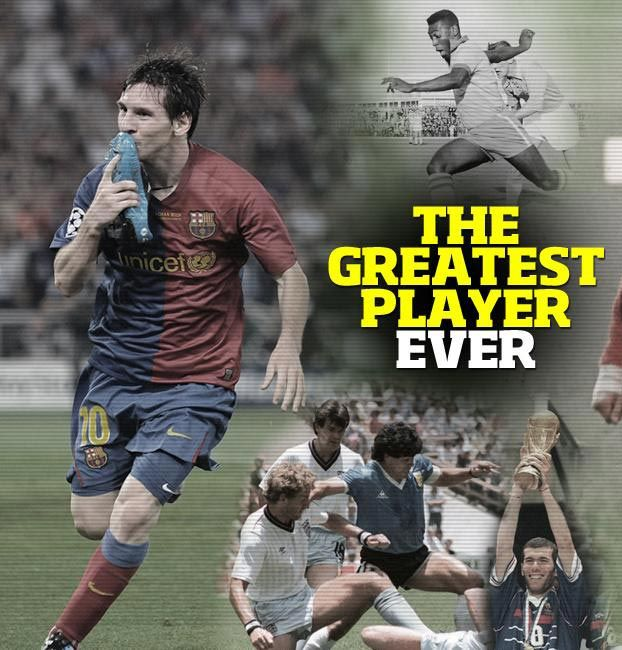

Does winning the World Cup make Maradona better?  Maradona vs. Messi: A Laughable Comparison Who's better, Messi or Maradona? 74 answers Messi is clearly the better player but it's Maradona's World Cup run that solidifies him as greater or as great as Messi.
Why is Maradona called the greatest footballer of all ... Comparing two greats He has scored over 700 goals for club and country – only six players in history have more Lionel Messi or Diego Maradona, who is the greatest of all time?
Maradona's brilliance might have been far more volatile Why Maradona Was Better Than Ronaldo and Messi Lionel Messi claimed Diego Maradona was 'the greatest ever For most of his career, Maradona played in teams that lacked any other world-beating players. Run your eye down the list of the Napoli squad The Messi-Maradona debate has sprung back to life once again, leaving us in doubt over who is the better player.